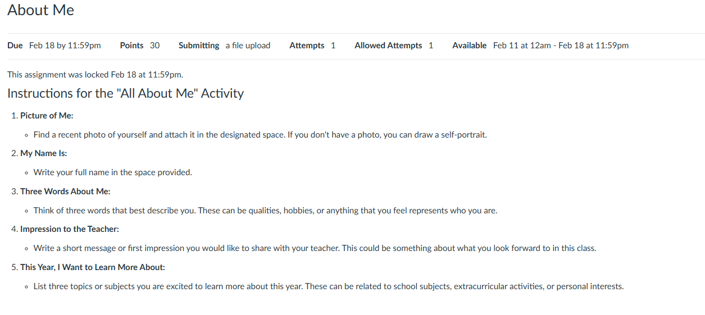
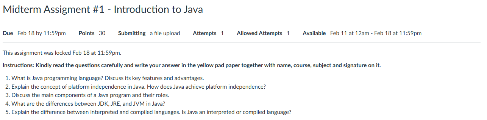
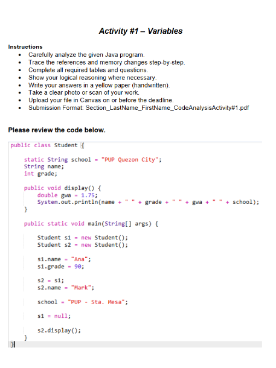
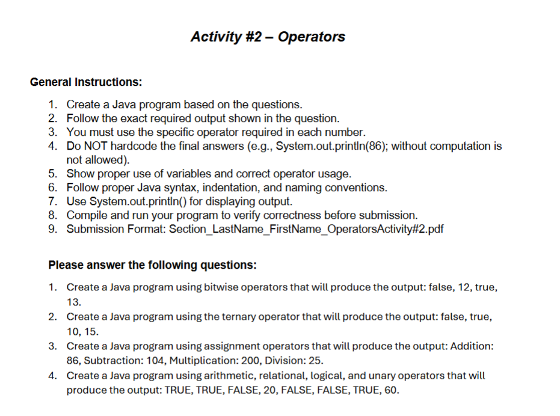
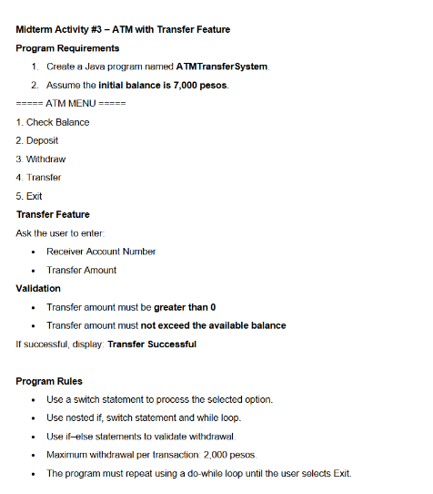
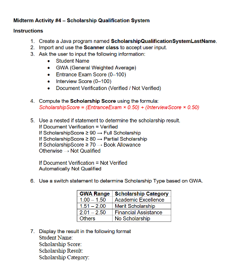
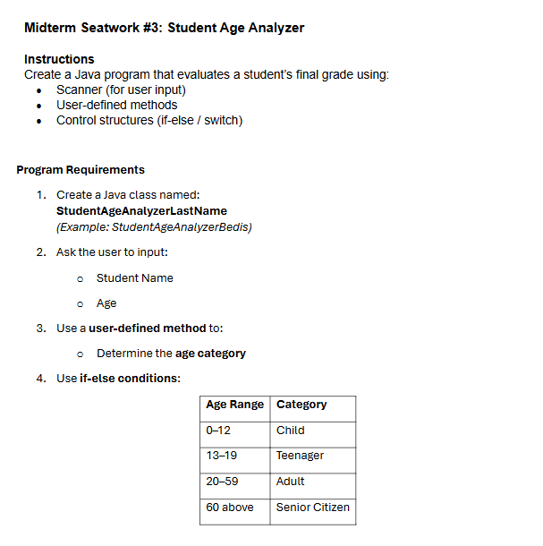
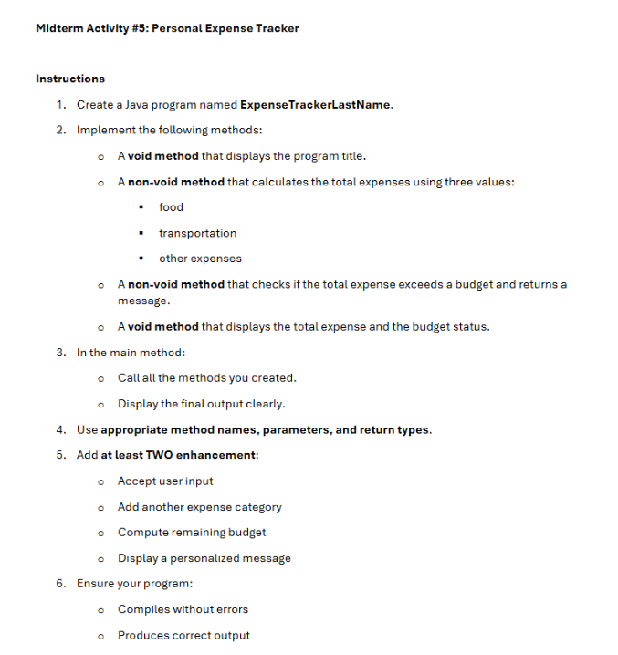

The first asynchronous activity was quite simple. It was a basic self-introduction and expectations towards the class. This helped me build my expectations and highlight areas where I want to dive in.

This second activity was a great fundamental start for me. It was an essay-type activity that revolved around discussing Java concepts and how it runs. This helped me understand the concepts of what makes a Java program run: JVM, JDK, JRE; and also its features.

Our very first activity was about analyzing the memory locations of a java program. At first, I found it extremely confusing because it was a new concept to me. There were heaps, stack, and method areas I could choose from, each having their unique signature.

Our second activity made us develop a basic program. The program mostly evaluated operators: postfix, prefix, unary, etc., then printed out its result using the system.out print function. It might be simple, but it helped me grasp further the intricacies of operators and java as a whole.

This third activity required us to develop a text-based menu-like interface for the CLI that handles banking transactions. I implemented numerous java methods and structures—such as the switch case block, methods, and multiple operators to successfully build my interface. It was an interesting activity, as I got to use multiple structures and blocks together with one another.

A fairly medium activity. It required us to create a program to determine—in accordance with the provided information of the student, whether they are eligible for a specific scholarship type. The code consists of multiple if-else structures to evaluate the eligibility of a student. It was mundane to construct, as it mostly involved numerous levels of if-else parameters; but it was quite interesting to come up with a possible solution to shorten the development time. It was a great practice, and it helped me further enhance my understanding about the structure of java.

A surprisingly simple activity. It instructed us to create a program that acquires an input from the user—with regards to their age, and determine whether they fall within an age group. I mainly used an if-else structure to determine whether a specific age falls within an age range. Then I implemented a Scanner object to read the input stream line to acquire the details encoded by the user from the CLI. It's straightforward and easy to do, but It's still a great practice for my fundamentals.

Our sixth activity only—conducted online—instructed us to develop an expense tracker system that calculated if the sum of the expense exceeds the initial budget or not. It required us to utilize the Scanner object to fetch an input from the user about their expense in a specific category. The activity was relatively simple compared to our previous activities, as it was less complex and it used fewer java concepts. Nonetheless, it was an opportunity for me to further exercise my knowledge about the different syntaxes of java.